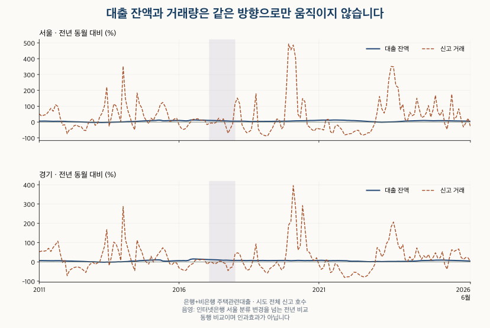

소득과 부담 · 대출 잔액과 거래량
주택대출 잔액이 늘면 아파트 거래도 늘까? 서울·경기 16년 비교
서울·경기 주택관련대출 잔액과 아파트 거래량의 2010~2026년 흐름을 비교합니다. 잔액 증가·거래 감소 사례와 은행·비은행, 계약월·신고월, 지역 범위를 구분합니다.
분석 기간 · 2010.1~2026.6 중심 · 2026.7 잠정 | 자료 기준일 · 공식 정의 확인 2026-10-16
주택대출 잔액이 늘었다는 기사를 보면 아파트 매수도 늘었을 것처럼 느껴집니다. 서울·경기에서는 잔액이 늘고 거래는 줄어든 달도 반복해서 나타났습니다. 2011년 1월부터 2026년 6월까지 전년 동월을 비교하면, 은행·비은행 합계 잔액은 늘고 신고 기준 아파트 거래는 줄어든 달이 서울 75개월, 경기 79개월입니다. 대출 증가를 읽기 전에 잔액과 거래가 각각 무엇을 세는지 확인해야 합니다.
2026년 6월 서울의 주택관련대출 합계 잔액은 전년 동월보다 4.65% 늘었지만, 아파트 매매 신고 호수는 28.41% 줄었습니다. 이는 대출이 거래를 줄였다는 결과가 아닙니다. 상환·양도·자금 용도·집계 시점이 서로 다른 두 통계가 같은 방향으로만 움직이지 않는다는 관측입니다.
주택대출 잔액은 그달 집을 사려고 빌린 돈인가요?
월말에 남아 있는 대출입니다. 그달 새로 실행된 대출만 세지 않습니다. 이 글은 한국은행의 예금은행과 비은행예금취급기관 주택관련대출을 합쳐 비교합니다. 가계대출 전체에 주택대출을 다시 더하면 부분과 전체를 중복해서 세게 됩니다.
과거 주택담보대출로 부르던 관련 통계는 현재 공식 설명에서 주택관련대출이라는 명칭을 씁니다. 한국은행은 2026년 1분기 가계신용 설명에서 명칭 변경을 안내했습니다. 집 구입 자금만으로 좁힐 수 없으며, 전세·중도금 등 주택과 관련된 대출도 고려해야 합니다. 두 기관의 합계가 모든 금융기관의 가계신용 총액을 뜻하지도 않습니다.
지역도 다릅니다. 대출은 취급점포 소재지, 아파트 거래는 주택 소재지를 기준으로 합니다. 서울시 통계 안내에 따르면 인터넷전문은행 대출은 2017년 2월부터 서울에 포함되며, 한국주택금융공사로 양도한 주택담보대출 잔액은 제외됩니다. 서울의 잔액을 서울 거주자가 서울 집을 사려고 빌린 돈으로 읽어서는 안 됩니다.
2010년 이후 서울·경기 잔액은 얼마나 늘었나요?
2010년 1월과 2026년 6월을 비교하면 두 기관 합계는 서울 153.64%, 경기 144.37% 증가했습니다. 은행 잔액의 규모가 더 크며, 비은행 잔액도 두 시점 사이에서 늘었습니다. 이 장기 누적 변화가 매달 거래 증가를 뜻하지는 않습니다.
| 지역 | 월 | 은행 (조원) | 비은행 (조원) | 합계 (조원) | 2010.1 대비 (%) |
|---|---|---|---|---|---|
| 서울 | 2010-01 | 105.04 | 13.18 | 118.22 | 기준 |
| 서울 | 2026-06 | 277.94 | 21.91 | 299.84 | +153.64 |
| 서울 | 2026-07 (잠정) | 279.29 | 21.84 | 301.13 | +154.73 |
| 경기 | 2010-01 | 85.52 | 11.64 | 97.16 | 기준 |
| 경기 | 2026-06 | 208.13 | 29.31 | 237.44 | +144.37 |
| 경기 | 2026-07 (잠정) | 209.29 | 29.25 | 238.54 | +145.50 |
표의 금액은 조 원 단위로 반올림했습니다. 합계는 반올림 전 금액으로 계산해 표시된 두 항목의 합과 끝자리가 다를 수 있습니다. 2026년 7월은 보유 자료의 최신 잠정 월이므로 주 비교에서 분리했습니다. 전체 월별 잔액은 비은행 주택대출 비중 글의 월별 표에서 확인할 수 있습니다.
잔액이 늘면서 거래가 줄어든 때는 언제인가요?
한두 달의 예외에 그치지 않았습니다. 전년 동월 잔액과 같은 달 아파트 매매 신고 호수를 비교했습니다. 서울은 186개월 중 75개월, 경기는 79개월에서 합계 잔액이 증가하고 신고 거래가 감소했습니다. 반대로 잔액이 줄고 거래가 늘어난 달도 있습니다.

| 지역 | 대출 범위 | 비교 월 | 잔액↑ 거래↓ | 잔액↓ 거래↑ | 같은 방향 | 변화 없음·미정 |
|---|---|---|---|---|---|---|
| 서울 | 은행 | 186 | 75 | 11 | 100 | 0 |
| 서울 | 비은행 | 186 | 52 | 59 | 75 | 0 |
| 서울 | 두 기관 합계 | 186 | 75 | 13 | 98 | 0 |
| 경기 | 은행 | 186 | 78 | 7 | 101 | 0 |
| 경기 | 비은행 | 186 | 66 | 40 | 80 | 0 |
| 경기 | 두 기관 합계 | 186 | 79 | 7 | 100 | 0 |
‘같은 방향’은 둘 다 증가하거나 둘 다 감소한 달입니다. 각 달의 전년 동월 비교는 기간이 겹칩니다. 따라서 이 횟수를 독립된 실험 수나 앞으로 거래가 줄어들 확률로 해석하지 않습니다.
사례는 결과를 보고 임의로 고르지 않았습니다. 합계 잔액 증가·신고 거래 감소 조건에서 가장 최근 달과, 신고 거래 감소율이 가장 큰 달을 지역별로 골랐습니다.
| 지역 | 선정 기준 | 월 | 은행 잔액 | 비은행 잔액 | 합계 잔액 | 신고 거래 |
|---|---|---|---|---|---|---|
| 서울 | 가장 최근 | 2026-06 | +3.34 | +24.77 | +4.65 | -28.41 |
| 서울 | 신고 감소율 최대 | 2019-03 | +5.61 | -10.25 | +3.88 | -87.59 |
| 경기 | 가장 최근 | 2025-08 | +7.01 | +22.51 | +8.47 | -38.18 |
| 경기 | 신고 감소율 최대 | 2021-12 | +4.69 | +15.92 | +5.74 | -81.01 |
서울 2019년 3월에는 은행 잔액이 5.61% 늘고 비은행 잔액은 10.25% 줄어 합계가 3.88% 늘었습니다. 경기는 2021년 12월 두 기관 잔액이 모두 늘었지만 신고 거래는 81.01% 줄었습니다. 합계 증가가 모든 기관의 동반 증가라는 뜻도 아니며, 어느 경우든 거래 감소의 원인을 대출 하나로 특정할 수 없습니다.
계약월로 세어도 같은 달에 거래가 줄었나요?
집계 시점을 바꾸면 같은 달의 방향도 바뀝니다. 신고 호수는 신고가 반영된 달, 계약 건수는 계약일이 속한 달을 봅니다. 경기에서는 시도 전체와 수집한 지역의 범위도 다르므로, 날짜 차이를 볼 때는 먼저 수집 범위의 신고·계약을 맞췄습니다.
| 지역 | 월 | 합계 잔액 | 수집 신고 호수 | 수집 계약 건수의 가능한 범위 |
|---|---|---|---|---|
| 서울 | 2026-04 | +6.16 | -6.33 | +61.7 ~ +66.7 |
| 경기 | 2026-06 | +4.34 | +1.44 | -6.4 ~ -5.0 |
서울 2026년 4월은 수집 범위 신고 거래가 6.33% 줄었지만 계약 건수는 반올림 오차를 감안해도 증가했습니다. 경기 2026년 6월은 반대로 신고 거래가 1.44% 늘고 계약 건수는 감소했습니다. 이 표는 두 방향이 확실히 다른 달 중 가장 최근 사례입니다.
계약 건수는 공개된 100건 단위 반올림값을 사용했습니다. 표의 범위는 그 반올림이 허용하는 변화율이며 통계적 신뢰구간이나 정확한 증감률이 아닙니다. 같은 반올림 건수가 표시되어도 실제 건수가 같았다고 단정할 수 없습니다.
세 거래 기준으로 전체 기간을 다시 비교하기
| 지역 | 거래 기준 | 비교 월 | 잔액↑ 거래↓ | 잔액↓ 거래↑ | 같은 방향 | 변화 없음·미정 |
|---|---|---|---|---|---|---|
| 서울 | 시도 전체 신고 | 186 | 75 | 13 | 98 | 0 |
| 서울 | 수집 범위 신고 | 186 | 75 | 13 | 98 | 0 |
| 서울 | 수집 범위 계약 | 186 | 78 | 16 | 91 | 1 |
| 경기 | 시도 전체 신고 | 186 | 79 | 7 | 100 | 0 |
| 경기 | 수집 범위 신고 | 186 | 79 | 8 | 99 | 0 |
| 경기 | 수집 범위 계약 | 186 | 80 | 9 | 97 | 0 |
수집 계약 기준의 잔액 증가·거래 감소는 서울 78개월, 경기 80개월입니다. 서울의 한 비교는 반올림 때문에 계약 증감 방향을 확정할 수 없어 미정으로 남겼습니다. 경기 수집 지역의 결과를 경기도 전체 계약 결과로 확대하지 않습니다.
신고 호수와 계약 건수는 날짜 외에도 집계 단위와 정정·해제 처리에서 차이가 날 수 있습니다. 자세한 범위는 아파트 거래량 출처 비교에서 확인할 수 있습니다.
최근 기간만 보거나 전월과 비교하면 결론이 바뀌나요?
엇갈리는 달의 수는 달라지지만, 두 지표가 항상 함께 늘지는 않는다는 관측은 유지됩니다. 두 비교 시점을 모두 2020년 이후로 제한하면 66개월 중 잔액 증가·신고 거래 감소가 서울 28개월, 경기 25개월입니다. 전월 대비로 바꾸면 전체 197개월 중 각각 80개월, 85개월입니다.
분류 변경 전후·최근 기간·잠정 월을 포함한 비교
| 지역 | 비교 범위 | 비교 월 | 잔액↑ 거래↓ | 잔액↓ 거래↑ | 같은 방향 | 변화 없음·미정 |
|---|---|---|---|---|---|---|
| 서울 | 전월 대비 · 2010.2~2026.6 | 197 | 80 | 16 | 101 | 0 |
| 서울 | 전년 대비 · 2017.2 이전 | 73 | 19 | 9 | 45 | 0 |
| 서울 | 전년 대비 · 두 시점 모두 2017.2 이후 | 101 | 48 | 4 | 49 | 0 |
| 서울 | 전년 대비 · 두 시점 모두 2020년 이후 | 66 | 28 | 4 | 34 | 0 |
| 서울 | 전년 대비 · 잠정 2026.7 포함 | 187 | 76 | 13 | 98 | 0 |
| 경기 | 전월 대비 · 2010.2~2026.6 | 197 | 85 | 13 | 99 | 0 |
| 경기 | 전년 대비 · 2017.2 이전 | 73 | 30 | 7 | 36 | 0 |
| 경기 | 전년 대비 · 두 시점 모두 2017.2 이후 | 101 | 40 | 0 | 61 | 0 |
| 경기 | 전년 대비 · 두 시점 모두 2020년 이후 | 66 | 25 | 0 | 41 | 0 |
| 경기 | 전년 대비 · 잠정 2026.7 포함 | 187 | 79 | 7 | 101 | 0 |
2017년 2월 전후 표는 비교의 양끝이 같은 분류 구간에 있는 경우만 셉니다. 서로 다른 기간의 횟수를 직접 순위로 비교하지 않습니다. 잠정 7월을 포함하면 서울의 엇갈림은 한 달 늘지만 경기에서는 늘지 않습니다.
상환이 줄거나 새 대출이 늘면 거래 감소와 잔액 증가가 함께 나타날 수 있습니다. 이미 계약한 주택의 자금 집행, 전세·중도금 대출, 금융기관 간 양도나 통계 분류 변화도 가능한 설명입니다. 이 자료에는 같은 사람의 계약·대출·상환을 연결한 기록이 없어, 특정 달에 어느 설명이 얼마나 기여했는지 분해할 수 없습니다.
계절성의 영향을 줄이기 위해 전년 동월을 주 비교로 삼았지만, 전년도 거래가 유난히 많거나 적었던 기저의 영향은 남습니다. 잔액과 거래의 방향 비교만으로 대출 규제의 효과나 다음 달 거래, 매수 시점을 판단하지 않습니다.
대출 증가 기사에서 무엇을 먼저 확인하나요?
- 잔액인지 신규 취급액인지 확인합니다. 월말 잔액 증가를 그달 주택 구입 자금 증가로 바로 바꾸어 읽지 않습니다.
- 기관·지역·자금 범위를 맞춥니다. 은행만인지 비은행까지인지, 취급점포인지 주택 소재지인지, 주택 관련인지 가계대출 전체인지 적어 봅니다.
- 거래의 날짜와 비교 기준을 확인합니다. 계약월·신고월, 전월·전년 동월, 시도 전체·수집 범위를 같은 문장에 밝혀야 비교가 가능합니다.
관심 지역에서 거래가 회복되는지 보려면 그 지역의 계약과 신고 흐름, 비교 기간을 먼저 살펴보세요. 대출 잔액은 금융 상황을 읽는 한 지표지만, 거래 회복을 대신 판정해 주지는 않습니다.
자료·선정 규칙·계산 방법
대출은 한국은행 ECOS의 예금은행·비은행예금취급기관 지역별 주택관련대출, 거래는 한국부동산원 신고 기준 매매 호수와 국토교통부 계약일 기준 수집 자료를 사용했습니다. 기존에 공개한 월별 잔액과 거래 자료(JSON) 중 서울·경기 2010년 1월~2026년 7월의 398개 지역·월 값을 재계산했습니다. 공식 정의는 2026년 10월 16일 확인했습니다. 관측월과 공표일은 다르며 2026년 전체 결과로 확대하지 않습니다.
주 분석은 2026년 6월까지이며 최신 7월은 잠정으로 분리했습니다. 전월 비교는 2010년 2월, 전년 동월 비교는 2011년 1월부터 가능합니다. 변화율은 ‘현재÷이전 −1’에 100을 곱합니다. 총 770개 전월·전년 비교를 별도로 검산하고 기관·거래 기준·기간별 방향을 대조했습니다. 사례는 주 분석의 가장 최근 엇갈림, 신고 감소율 최대(동률 포함), 같은 수집 범위의 계약·신고 방향 차이 중 최근 달이라는 규칙으로 선택했습니다.
100건 반올림값이 c이면 실제 정수 건수의 가능한 범위를 0 이상인 c−50~c+49로 두었습니다. 두 달의 모든 가능한 조합에서 방향이 같을 때만 증가·감소로 판정하고, 그렇지 않으면 미정으로 남겼습니다. 이전 건수의 하한이 0이면 상대 변화 범위를 계산하지 않습니다. 계약 변화율 범위는 하한을 내림, 상한을 올림해 소수 첫째 자리까지 넓혔고 나머지 변화율은 소수 둘째 자리까지 표시했습니다.
대출은 취급점포 기준이고 주택금융공사 양도분을 제외합니다. 2017년 2월 인터넷은행 서울 분류 변경을 넘는 비교와 이를 제외한 결과를 구분했습니다. 같은 사람의 차입·상환·거래를 연결하지 않았으며 동행 비교를 인과효과로 해석하지 않습니다. 수집 범위·신고/계약 정의는 앞선 거래량 출처 비교 글의 설명을 따릅니다.
분석·집필: 파파펭귄 (Nobot Kang). 에이전트로 공식 정의 확인·독립 산술 대조·도표 제작과 초안 검토를 보조했습니다.